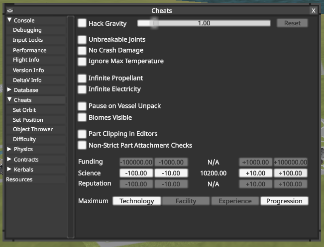

Milestone Challenges
Go Back
Below are the milestone challenges that you all should work to accomplish. Completing a milestone will unlock new technology for you to use to try to accomplish the next milestone and other space race challenges. Click on the title of each milestone to see the tech on the tech tree that you can unlock. Underneath the list are instructions on how to unlock tech.
- Launch-and-Land: Successfully launch a manned rocket, land it safely, and recover the totally fine pilot.
- Orbit: Build a manned rocket, launch it into a orbit and complete at least one full orbit. Then re-enter the atmosphere and safely land back on the surface.
- Mun Landing: Create a rocket that will transport a pilot safely to the Mun, the closest moon around Kerbin. Plant a flag on the Mun, and then return back to Kerbin using your rocket.
- Duna Rover: Create a rover that can drive around on the surface of a planet and then design an unmanned rocket to fly it to Duna, the version of Mars in the Kerbol system. Safely land the rocket on the planet, deploy the rover, and then drive it around on Duna.
Unlocking New Tech
There is an in-game progression system for unlocking new technology, but it can be rather tedious in my opinion. So we will use other means to unlock new technology. After successfully completing one of the above milestones you can unlock the tech as shown in the links above. To actually do this, we need to cheat the game a little. The in-game currency to unlock technology is "Science", and so to unlock new tech you will cheat yourself new Science points:
- Open the Debug Meny by pressing Alt+Fn+F12.
- In the side panel select "Cheats" to open the cheat options.
- On the main screen is a row for Science points and the cheat menu allows you to increase your Science by increments of 100 by pressing the +100.00 button. Whenever you unlock new tech by reaching a Milestone, give yourself enough Science to actually unlock and use the tech.
- I know about the Cheat Menu. I know you know about the Cheat Menu. Don't use the Cheat Menu except for sanctioned activities.

{kind=link}
{kind=link}
{kind=link}